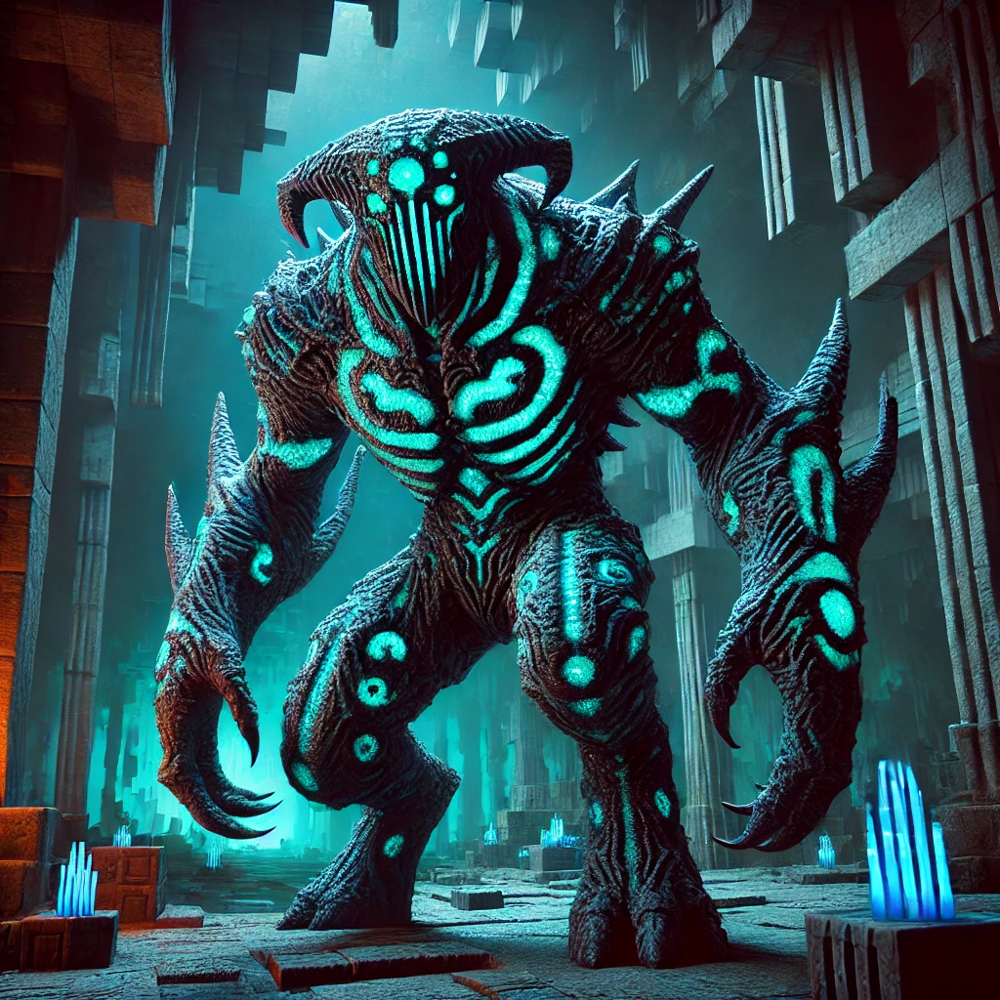

-
Afogado com Tridente
Um zumbi aquático empunhando um tridente, perigoso tanto em combate corpo a corpo quanto à distância. Embora um zumbi aquático comum não seja tão perigoso, os que empunham tridentes causam danos massivos à distância.
ATK: 700 DEF: 500 -
Piglin Bruto/Bárbaro
Um guerreiro implacável que guarda os Bastions (Bastiões), armado com um machado mortal e resistência feroz. Esse monstro é extremamente agressivo e não é distraído por ouro como os Piglins comuns.
ATK: 800 DEF: 700 -
Invocador/Evocador
Um mago sinistro cujos poderes conjuram mordidas mágicas e invocam criaturas chamadas Vexes para atacar seus inimigos.
ATK: 800 DEF: 600 -
Guardião Ancião
É um protetor colossal encontrado em Monumentos Oceânicos, possui um poderoso laser, espinhos defensivos e aplica fadiga/cansaço, tornando combates subaquáticos difíceis.
ATK: 700 DEF: 900 -
Wither
Um dos chefes mais destrutivos. Uma entidade com três cabeças, capaz de voar, que espalha destruição com explosões avassaladoras e o temível efeito wither.
ATK: 900 DEF: 850 -
Warden
Uma besta colossal e cega, mas com uma audição sensível, que ronda as profundezas. Seus golpes causam danos absurdos, e suas ondas sônicas são fatais, sendo praticamente indestrutível em combate direto.
ATK: 990 DEF: 990 -
Dragão Ender

Asas imponentes, rajadas destrutivas e uma presença aterrorizante: O chefe supremo do End. Embora tenha menos vida que o Warden, é considerado o chefão final do jogo, com ataques devastadores e uma batalha aérea complexa.
ATK: 980 DEF: 950